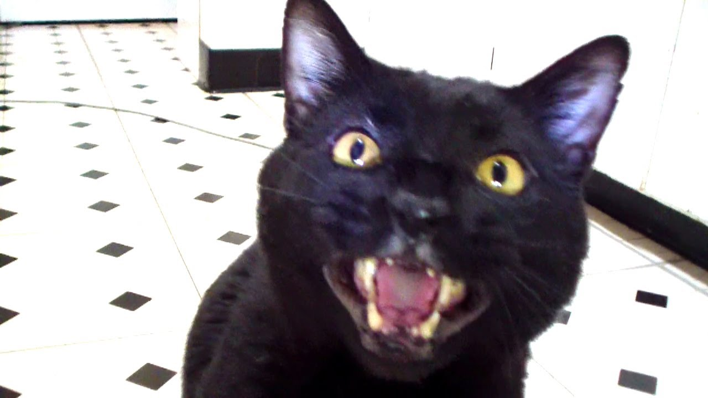

Easy to Use
Our user experience experts have spent hours interacting with cats in their
natural environments, and are prepared to create a blogging experience that
transcends such mundane details as typing or having
fine motor skills and allows our users to focus on what's really
important: generating content, and staring lazily into space.
High Demand
When was the last time you read a blog by a cat? If you can't remember, you're
not alone. Millions of cats are not on the internet yet, simply because there
isn't a tailored service that works for them. Imagine, human,
trying to use email for Rhinocerouses. The challenges you'd face are exactly
what cats are trying to deal with when they go to publish now. We're going to
lower that accessibility barrier.
Testimonial

Meow meow meow maww hiss meow.
Compare
| |
Twitter |
Twitter for Cats |
| Accessibility for non-humanoids |
Poor |
Awesome |
| Easy-to-Access emoji for fish and purr |
None |
Clearly labelled buttons |
| Ability to integrate videos, posts from other social networks, and
images |
Yes |
There are no other soical networks for cats |
Sign Up Now
For the chance to beta test, or to get on our mailing list, please sign up
today (cats only)!